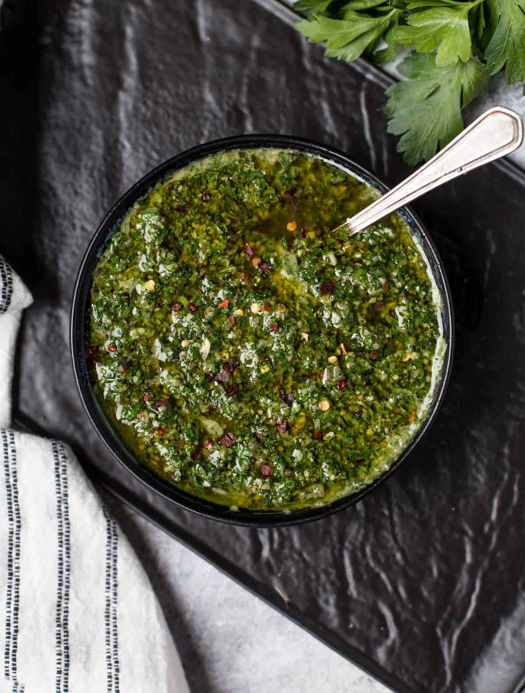

Chimichurri Sauce

Description
This dish is an argentinian sauce that goes very well with all kinds of meats
Ingredients
- 1 cup fresh parsley
- 3/4 cup extra virgin oil
- 3 tbsp red wine vinegar
- 2 tbsp dried oregano
- 2 teaspoons ground cumin
- 1 1/2 teaspoons minced garlic
- 1 1/2 teaspoons pepper sauce
- 1 teaspoon salt
Steps
- Combine parsley, oil, vinegar, oregano, cumin, garlic, hot sauce, and salted
in a blender. Mix on medium speed until ingredients are evenly blended, about 10 seconds